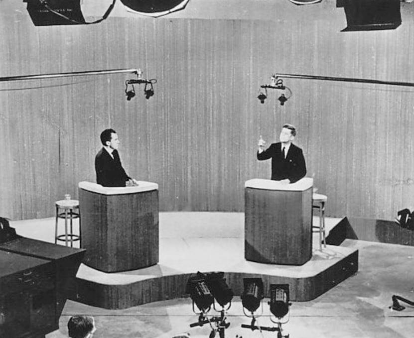
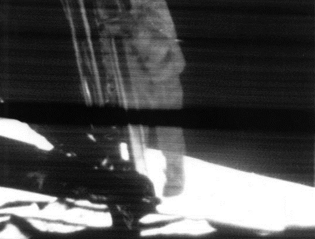
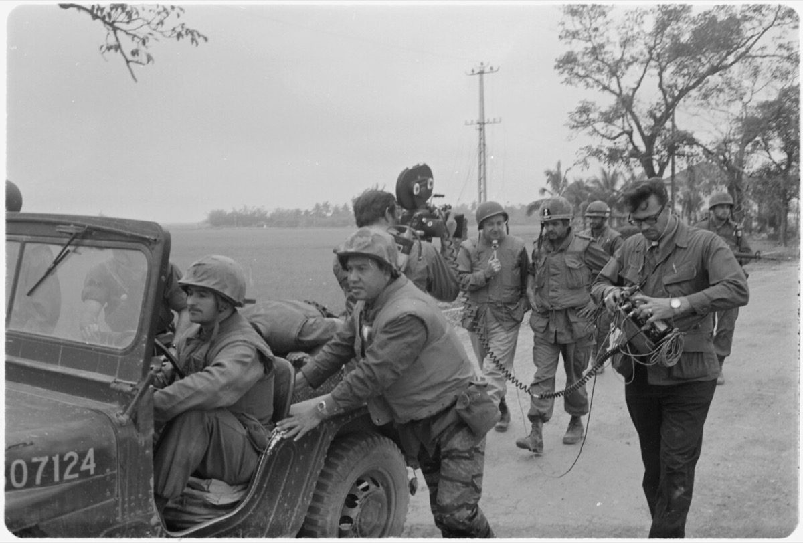

How Information Changed the World
Chapter Four
The Camera Picks a President
Television · 1950s–1990s
The Moment
It is September 26, 1960. In a television studio in Chicago, two men are about to make American history.
The first, Richard Nixon, is the Vice President of the United States. He has spent the past two weeks recovering from a hospital stay. He has lost weight. His shirt collar is too loose. He has refused makeup. Under the hot studio lights, sweat begins to bead on his upper lip.
The second, John F. Kennedy, is a young senator from Massachusetts. He has arrived rested and tanned from days of campaigning in California sunshine. He wears makeup. His shirt fits.
The two men are about to debate live, on television, for ninety minutes. It is the first time in American history that the presidential candidates of both major parties have faced each other on TV.
About 70 million Americans watch. Several million more listen on the radio.
For ninety minutes, the two men argue policy: the economy, the Cold War, the future of American farms. Nothing dramatic happens. No knockout blow. For the politics of that era, both men do well.
After the debate, pollsters asked Americans who won.
A small survey of people who had only heard the debate on the radio reported that Nixon had done better. The much larger television audience, asked the same question, said Kennedy had won.
Same words. Different medium. Different verdict.
The story may be part legend — the radio survey was small, and the kind of people who chose radio over television in 1960 may already have been a different sort of voter. But the legend captured something real.
Television was a new way to know a person. Eight weeks after that debate, Kennedy won the presidency by one of the narrowest margins in American history. Many historians believe the camera, not the man, made the difference.

Before
A century before that Chicago studio, most Americans could go through their entire lives never seeing the face of their president. They might see a still photograph, a painted portrait, or an artist's etching in a newspaper. They would not see him walk. They would not hear him think. They would not watch him take a breath before answering a hard question.
Even when a president visited their city, most people experienced him as a small distant figure on a stage, far away, surrounded by crowds.
From the 1920s onward, the radio of Chapter 3 added a president's voice to the picture. Now Americans could hear their president. But a voice can be carefully prepared, paused, and edited. A face — moving in real time, under pressure — is much harder to fake.
Until the late 1950s, when politicians met the public, they met the public in writing or in speech. Their bodies were not part of the deal. A politician who happened to be tall and handsome had no obvious advantage over one who was short and balding, because most voters had never seen either of them move.
This is hard to imagine today. We are so used to politics-as-faces that it feels strange to remember a world where politics-as-faces did not yet exist. But for most of human history — including most of American history — that was exactly the world people lived in.
The Tech
Television was a strange technology built mostly out of old parts.
It used radio waves — the same invisible vibrations of the electromagnetic field from the previous chapter. The waves carried not just sound this time but also a stream of information about brightness. A camera in a TV studio scanned a scene, line by line, dozens of times every second. The brightness of each line was turned into an electrical signal. That signal was added to a radio wave and broadcast from a tall tower.
In every home for many miles around, a metal antenna on the roof picked up the wave. Inside the TV set, a heavy glass tube called a cathode ray tube fired beams of electrons at the back of the screen, rebuilding the picture line by line, dozens of times a second. The result, when it worked, was a small black-and-white moving image of a faraway place.
By the early 1950s, TV sets were cheap enough that most American families owned one. By the early 1960s, most homes had a nightly "TV time" — a few hours each evening when the whole family sat around the set and watched the same handful of shows.
The country was, suddenly, watching itself.

The Ripples
The first big ripple was the Kennedy–Nixon moment itself. Politicians realized, almost overnight, that how a candidate looked on camera was now part of whether they would win. Charisma — the way someone moved, smiled, sweated, answered a question without flinching — became a measurable political quality. Television had made how a candidate looked part of how voters judged them.
The second big ripple was nearly the opposite: a moment so enormous that, for a few hours, almost everyone watching forgot to argue.
On the evening of July 20, 1969, an estimated 650 million people — about one in every six humans alive — sat in front of a television screen and watched a grainy black-and-white image of an American astronaut named Neil Armstrong step from a ladder onto the surface of the Moon. Schools stayed open late. Bars went quiet. Strangers in airport lounges in Tokyo, pubs in London, and apartments in São Paulo looked at the same picture at the same moment.
It is probably the largest shared human experience in history. It has not happened again.
The third big ripple was darker.
Throughout the late 1960s and into the early 1970s, American television news showed the war in Vietnam in a way no war had ever been shown before. Every evening, on the nightly news, families watched soldiers fight and die — sometimes that very afternoon's footage, flown back to New York by jet. The casualty numbers were displayed on screen. Wounded men were carried into helicopters. Burning villages filled the picture.
It became known as "the living room war."
Public support for the fighting collapsed. Many Americans came to believe — and many historians still argue — that nightly TV coverage was a major reason. Other historians say television followed the country's mood rather than driving it. Either way, for the first time in human history, a war was being fought in front of an audience that could not be hidden from.
The losers in all of this were not always easy to spot. Radio, briefly, lost much of its prime-time audience to TV. Newspapers lost classified ads to TV listings. But the deepest loss was something older: the idea that political leadership was mostly about ideas — arguments, plans, written manifestos.
By the 1980s, American political campaigns were spending more on television commercials than on anything else, and many of those commercials were not really about ideas. They were about attacking the opponent's image. A famous 1988 ad called "Willie Horton" was so vicious, so racially loaded — designed to play on white voters' fear of Black Americans — and so effective that political scientists still teach it today as the moment American political ads stopped pretending to be about policy and openly became about fear.
By the mid-1990s, the idea of news as a shared, mostly neutral civic space — the kind of nightly news that the CBS anchor Walter Cronkite had spent thirty years building — began to fragment. New cable channels appeared, each openly aimed at a politically partisan audience. Some leaned right. Some leaned left. By 2000, Americans no longer all watched the same nightly news. They watched the version of America they already wanted to see.
The same camera that had made the world cry together at the Moon landing was now used to make Americans angry at each other.

The Pattern
Look again at the shape.
For about a decade — from the late 1950s through the Moon landing in 1969 — television was a miracle. People wrote about it the way they had written about radio in the 1920s, and about the telegraph in the 1840s. Soldiers' families could see news of their war the same afternoon. Strangers across continents could share the same moment in the same hour.
Through the 1970s, it became ordinary. A box in every living room. Children growing up never knowing a world without it. Sitcoms. Saturday morning cartoons. The evening news with a steady, trusted voice telling viewers "that's the way it is."
By the 1980s and 1990s, it was being weaponized. Attack ads. Race-loaded campaign commercials. Partisan cable channels feeding each viewer the version of America they already wanted to see.
Miracle. Ordinary. Weapon.
Same shape as Chapter 1. Same shape as Chapter 2. Same shape as Chapter 3. About 40 years this time — slightly slower than radio's thirty, but still far faster than print or telegraph. The overall direction keeps shortening, even with the occasional pause.
Pattern Tracker
Chapter 4: Television
Now
We are still living inside the world the camera made. Image-driven politics. Shared national moments. Fragmented news. These were not invented by the technology of your generation. They were invented by television, decades before the first webpage existed.
Reflect
- The 1960 debate showed that the medium can change the message. Think of a time you saw a video version and a written version of the same event and they felt different. What changed between them?
- The Moon landing united a sixth of humanity around a single image, in real time. Why might it be hard for that to happen again today?